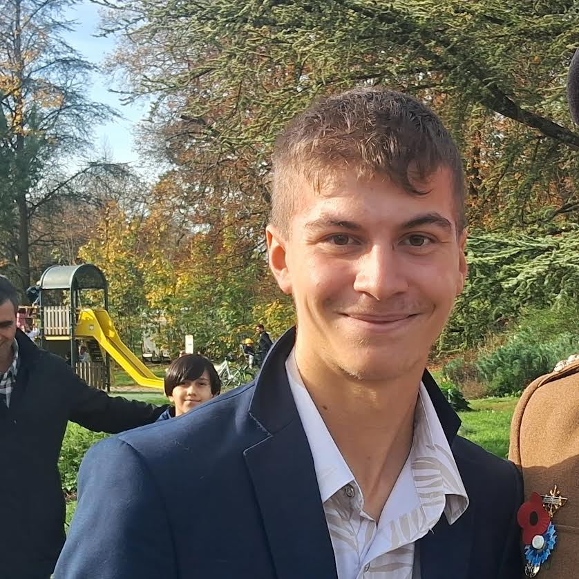

Présentation Personnelle

Quentin Delvallée
J'ai 18 ans. Je suis né le 23 février 2007 à Belfort.
Je suis actuellement élève au lycée Louis Pergaud à Besançon.
Je suis passionné par l'informatique, l'aéronautique, l'intelligence artificielle...
Voici des informations complémentaires me concernant.
Mon Parcours Scolaire
- 2025 à aujourd'hui : Formation Brevet Technicien Supérieur Services Informatiques aux Organisations au lycée Louis Pergaud à Besançon (25000)
- 2022 à 2025 : Lycée Professionnel option C au lycée Denis Diderot à Bavilliers (90800) - Obtention du Baccalauréat avec mention ASSEZ BIEN
- 2018 à 2022 : Collège général au collège Saint Joseph à Héricourt (70400) - Obtention Diplôme National du Brevet avec mention BIEN
Cours / Formation Scolaire
- Brevet Initiations Aéronautique de 2025 à 2026
au lycée Louis Pergaud à Besançon - Formation Premier Secours Citoyens
caserne sapeurs pompiers à Montbéliard - Formation Militaire de 2023 à 2024
au 1er Régiment Artillerie
Activités Extra-Scolaire
- Présentateur Planétarium
à la cité de l'espace à Toulouse - Formation Scoutisme
Dans les Alpes - Formateur Simulateur Aviation
au 1er Régiment Artillerie
Centre et intérêt
- Milieu de l'Informatique : Le réseau, la conception 3D, Création de site WEB...
- Milieu de l'Aéronautique : Projets Innovants, le Spatial, La conquête Spatial...
- Mes Loisirs : Randonnée, Histoire, le tir de précision, Astronomie...